Snapbot: Enabling Dynamic Human Robot Interactions for Real-Time Computational Photography
Abstract
Photography remains an expert area requiring right focus, exposure, composition, and even post-processing. Yet, robotic automation can enable precise camera manipulation, focus and exposure adjustment, camera composition, and post-processing by leveraging state-of-the-art computational photography. Existing proposals for robotic photography focus on adjusting camera angles for static portraits or developing image evaluation metrics, thus falling short in capturing dynamic human robot interactions. This paper describes the design and implementation of Snapbot, a human robot interaction system designed specifically for computational photography. Snapbot dynamically detects face and pose for exposure and focus and interactively controls robot arm for camera composition to perform image scoring and enhancing. As perception, control, and computational photography form an end-to-end pipeline, Snapbot promises a new future in which image focus, exposure, composition, and generation can be jointly optimized as a unified process. We have implemented and deployed Snapbot on a UR3 demonstrating the mean image quality score is 1.51× compared to aesthetic visual analysis dataset. We also perform ablation study to analyze the impact of each stage of Snapbot both visually and quantitatively.
How Snapbot Works
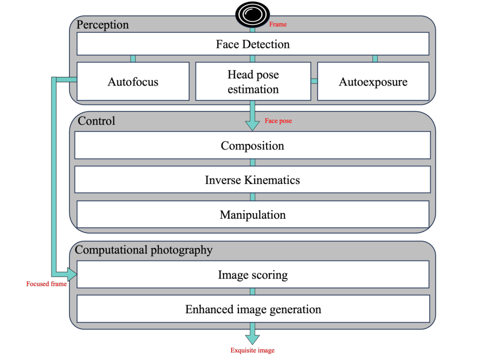
Snapbot integrates three stages into a single real-time pipeline:
- Perception. A face detector (YOLOv8-face) localizes the subject in every frame. Autoexposure keeps the average intensity of the detected facial region stable even at the lower resolutions used for real-time operation, autofocus recovers degraded frames with a DNN-based image focus model, and an algorithm-based head pose estimator matches live facial landmarks against 2,223 pre-constructed pose samples via quadtree search.
- Control. The perceived facial direction vector is encoded into a transformation matrix that yields the optimal camera composition. A closed-loop inverse kinematics solver based on the damped pseudo-inverse avoids singularities, and a moving average filter smooths the control input so the manipulator follows a moving person both safely and stably.
- Computational Photography. An Image Score Model (ISM), trained on the portrait category of the AVA dataset, filters burst shots by aesthetic quality, and an Enhanced Image Generative Model (EIGM) applies exposure compensation, hue and saturation adjustment, color space conversion, tone mapping, and gamma correction—so the selected photo looks professionally retouched.
Dynamic Camera Composition
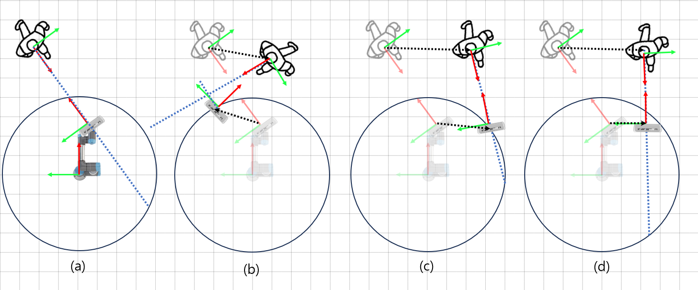
As the subject moves and turns, Snapbot continuously re-solves for the camera pose that keeps the person framed along their facial direction: (a) shows the camera position relative to the initial human pose, and (b)–(d) show how the composition adapts to human movement while a workspace constraint keeps the manipulator within its reachable range. This closed-loop composition is what allows Snapbot to capture dynamic human robot interactions rather than static portraits.
From Tracking to a Printed Photo
Around the Snapbot pipeline, Team PlanR built a complete robot photo studio experience: the robot tracks and shoots, then visitors pick a photo, apply AI stylization, choose a frame, and take the print home.
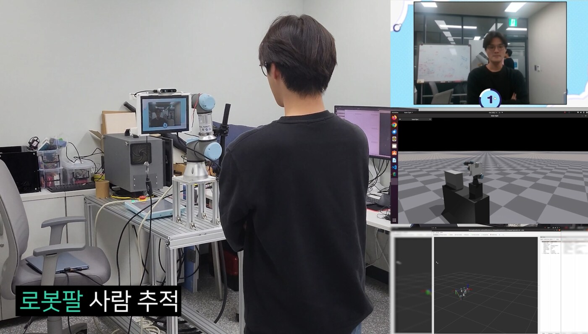
1. The robot arm tracks the subject in real time
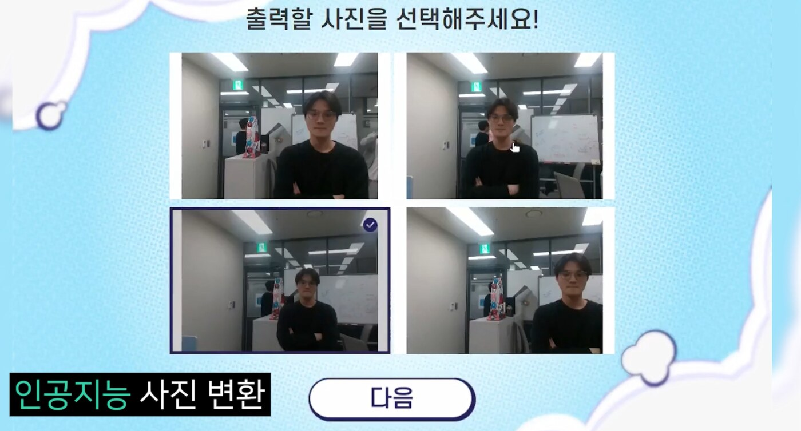
2. Burst shots are scored and stylized with AI
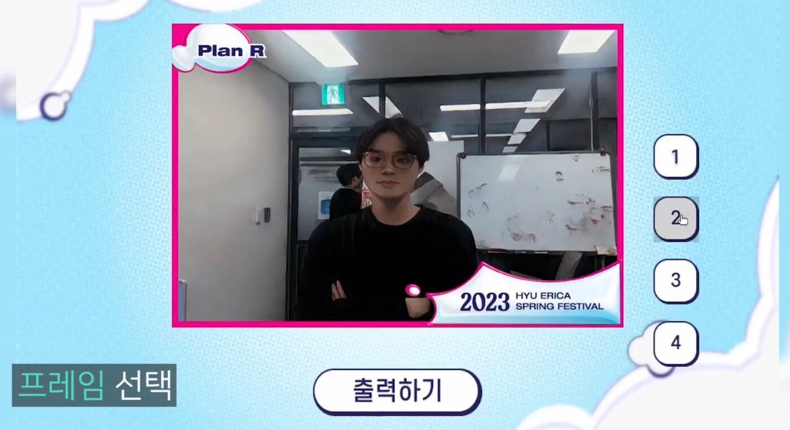
3. The visitor picks a frame on the touchscreen
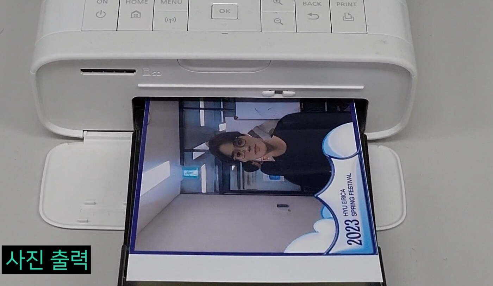
4. The enhanced photo is printed on the spot
Results
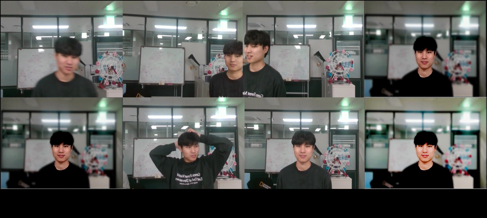
Snapbot was implemented on a UR3 manipulator with a RealSense D435 camera and a CN0364 touchscreen for interaction, running on an Intel i5-6600K CPU and a Titan RTX GPU. The ablation above shows the effect of each stage: (a) autofocus, (b) robotic camera composition vs. a fixed camera, (c) the Image Score Model, and (d) the Enhanced Image Generative Model.
With the full pipeline, Snapbot reaches a mean image quality score of 0.7852 — a 1.51× improvement over the aesthetic visual analysis (AVA) dataset baseline of 0.5189 — and outperforms it in every individual category:
| Score | Balancing Elements | DoF | Light | Object | |
|---|---|---|---|---|---|
| AVA Dataset | 0.5189 | 0.0341 | 0.1152 | 0.0568 | 0.0941 |
| Snapbot | 0.7852 | 0.8085 | 0.7318 | 0.7799 | 0.6360 |
| w/o EIGM | 0.5521 | 0.7002 | 0.5910 | 0.5832 | 0.4217 |
| w/o ISM, EIGM | 0.3544 | -0.062 | 0.1144 | -0.1943 | -0.1030 |
Overall mean score and individual evaluation metrics for the AVA dataset vs. Snapbot with and without ISM and EIGM.
Demo Video
Snapbot in the Wild
Snapbot was deployed as a robot photo studio at the 2023 Hanyang University ERICA Spring Festival, photographing visitors and printing their pictures on the spot.
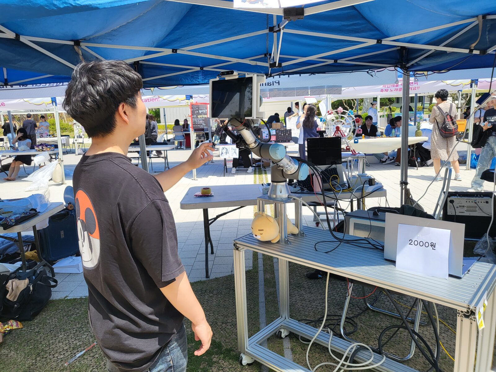
A visitor poses while Snapbot tracks them and composes the shot.
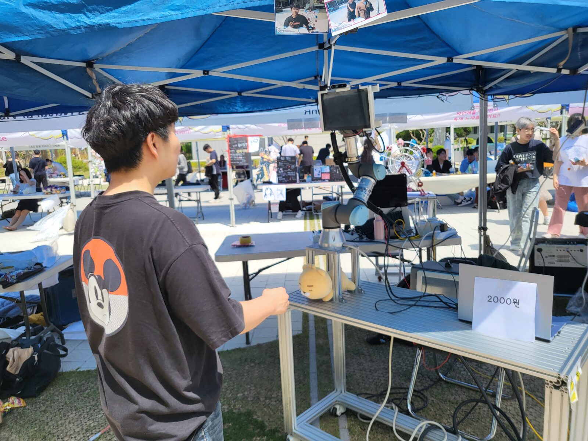
The UR3 arm follows the subject autonomously throughout the session.
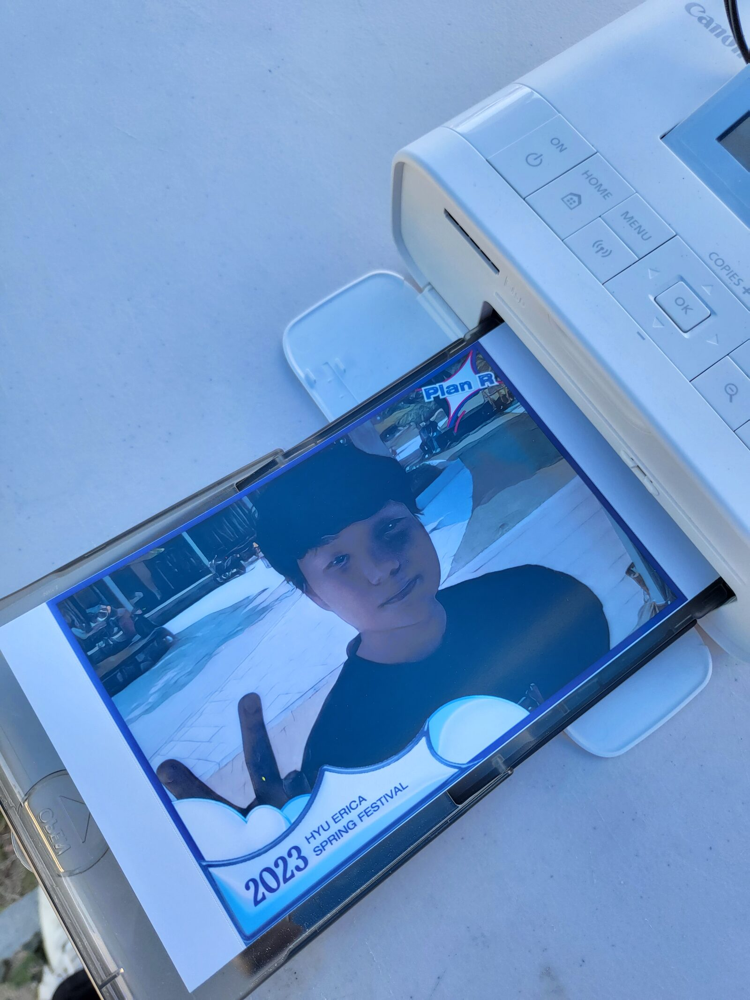
Enhanced and stylized photos are printed on the spot.
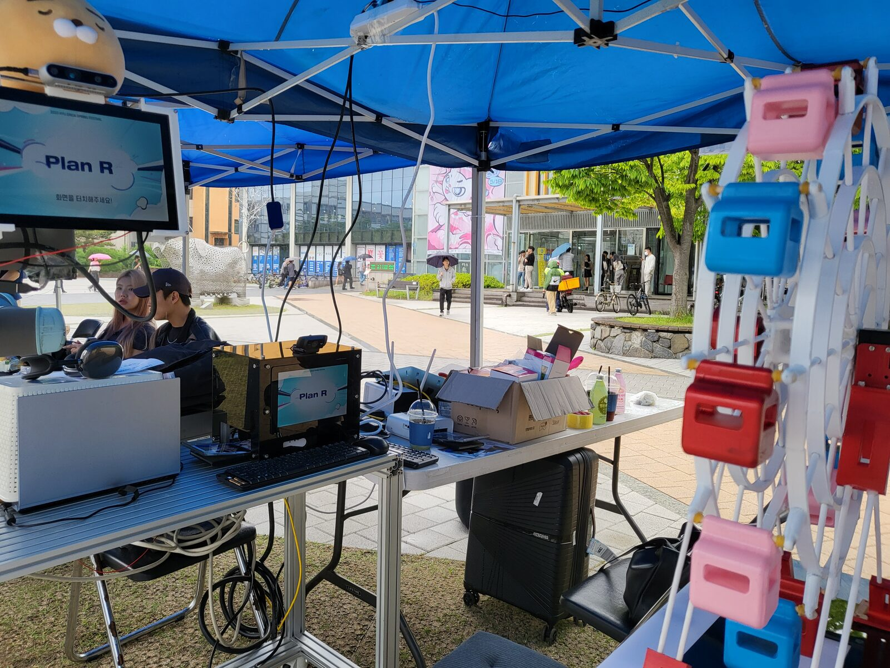
The Team PlanR booth, with visitors' printed photos on display.
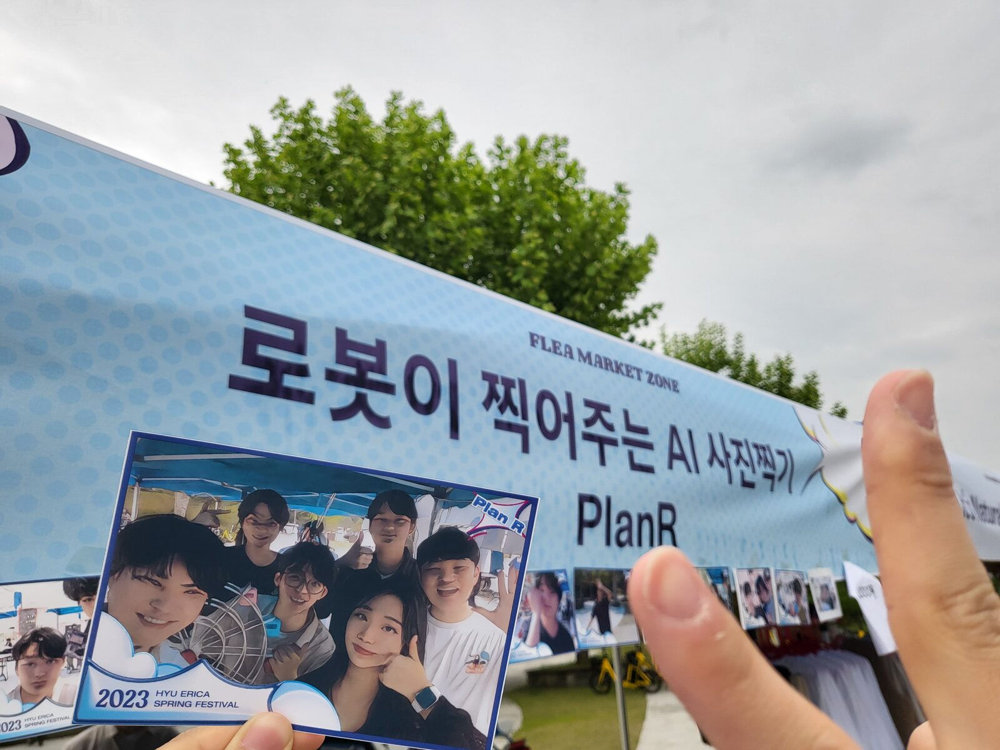
“An AI photo studio where a robot takes your picture” — Team PlanR.
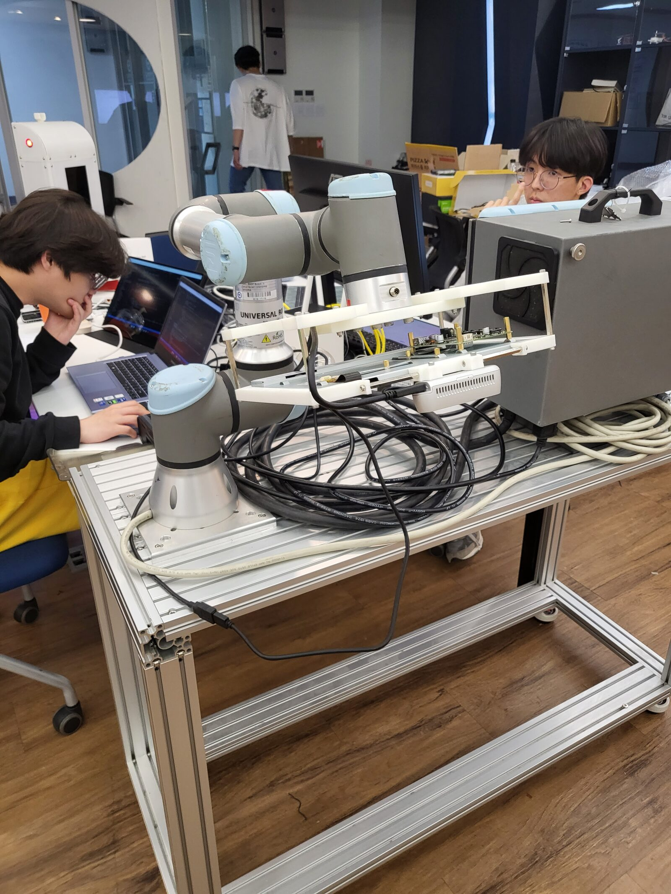
Behind the scenes: the UR3 manipulator and camera rig during setup.
Paper
Acknowledgments
This work was supported in part by the National Research Foundation of Korea (NRF) grants 2022R1G1A1003531 and 2022R1A4A3018824, and the Institute of Information and Communications Technology Planning and Evaluation (IITP) grant IITP-2024-2020-0-01741, funded by the Korea government (MSIT). Robot hardware was developed with Wanggeon Lee of Team PlanR.
BibTeX
@inproceedings{choi2024snapbot,
author = {Choi, Chanyeok and Kim, Jeonghan and Nam, Yunjae and Lee, Youngmoon},
title = {Snapbot : Enabling Dynamic Human Robot Interactions for Real-Time Computational Photography},
booktitle = {Companion of the 2024 ACM/IEEE International Conference on Human-Robot Interaction (HRI '24 Companion)},
year = {2024},
pages = {327--331},
publisher = {Association for Computing Machinery},
address = {New York, NY, USA},
doi = {10.1145/3610978.3640712},
url = {https://doi.org/10.1145/3610978.3640712}
}